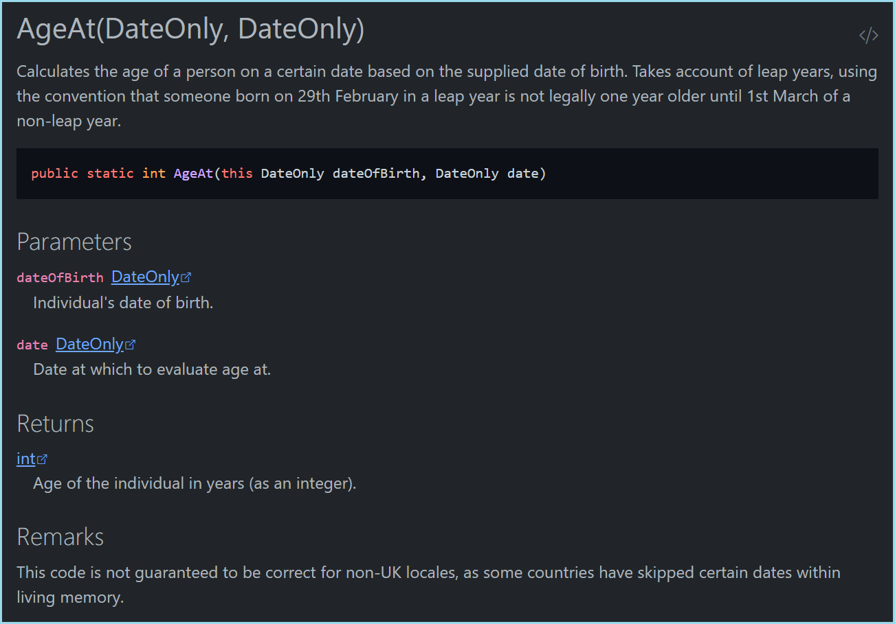

Basic Concepts
Introduction
Docfx is a powerful tool but easy to use for most regular use cases, once you understand the basic concepts.
Docfx can be used as a static site generator, but the real value of the tool is in bringing together static documentation pages and .NET API documentation. Docfx supports both C# and VB projects (although currently the output of tool is limited to C# syntax), and relies on the long-established XML comment syntax for C# (and similarly for VB). For example, the following C# code:
/// <summary>
/// Calculates the age of a person on a certain date based on the supplied date of birth. Takes account of leap years,
/// using the convention that someone born on 29th February in a leap year is not legally one year older until 1st March
/// of a non-leap year.
/// </summary>
/// <param name="dateOfBirth">Individual's date of birth.</param>
/// <param name="date">Date at which to evaluate age at.</param>
/// <returns>Age of the individual in years (as an integer).</returns>
/// <remarks>This code is not guaranteed to be correct for non-UK locales, as some countries have skipped certain dates
/// within living memory.</remarks>
public static int AgeAt(this DateOnly dateOfBirth, DateOnly date)
{
int age = date.Year - dateOfBirth.Year;
return dateOfBirth > date.AddYears(-age) ? --age : age;
}
can be used to generate output like this:

Static documentation pages are prepared using Markdown (slightly enhanced to support specific features). Markdown content can also be injected into the generated API documentation using a feature called 'Overwrites'.
Once the API documentation has been parsed from the source code, it is compiled along with the Markdown content into a set of HTML pages which can be published a website. It is also possible to compile the final output into one or more PDFs for offline use.
Docfx is a command-line tool that can be invoked directly, or as a .NET Core CLI tool using the dotnet command, but it can also be invoked from source code using the Docset.Build method in the Microsoft.DocAsCode namespace. It is configured using a JSON configuration file, docfx.json which has sections for different parts of the build process.
Consuming .NET projects
The most common use case for processing .NET projects is to specify one or more .csproj files in the docfx.json file:
{
"metadata": [
{
"src": [
{
"files": [
"src/MyProject.Abc/*.csproj",
"src/MyProject.Xyz/*.csproj"
],
"src": "path/to/csprojs"
}
],
"dest": "api"
}
],
//...
}
Although Docfx can build a documentation website in one step, it's helpful to understand the separate steps the tool uses to generate its output.
The first step is called the metadata step and can be completed using the following command line:
docfx metadata path/to/docfx.json
This command reads all the source files specified by the projects listed in docfx.json and searches for XML documentation entries. Note that this step does not use .xml compiler output but rather uses the Roslyn compiler to navigate the supplied codebase. The output of this step is a set of YAML files that are stored in the dest folder specified in docfx.json.
Here's an example of the (partial) output from the above code example:
### YamlMime:ManagedReference
items:
- uid: MyProject.Extensions.DateOnlyExtensions.AgeAt(System.DateOnly,System.DateOnly)
commentId: M:MyProject.Extensions.DateOnlyExtensions.AgeAt(System.DateOnly,System.DateOnly)
id: AgeAt(System.DateOnly,System.DateOnly)
isExtensionMethod: true
parent: MyProject.Extensions.DateOnlyExtensions
langs:
- csharp
- vb
name: AgeAt(DateOnly, DateOnly)
nameWithType: DateOnlyExtensions.AgeAt(DateOnly, DateOnly)
fullName: MyProject.Extensions.DateOnlyExtensions.AgeAt(System.DateOnly, System.DateOnly)
type: Method
source:
remote:
path: src/MyProject/Extensions/DateOnlyExtensions.cs
branch: main
repo: https://github.com/MyUser/MyProject.git
id: AgeAt
path: ../../MyProject/src/MyProject/Extensions/DateOnlyExtensions.cs
startLine: 63
assemblies:
- MyProject.Common
namespace: MyProject.Extensions
summary: >-
Calculates the age of a person on a certain date based on the supplied date of birth. Takes account of leap years, using the convention that someone born on 29th February in a leap year is not legally one year older until 1st March of a non-leap year.
For the most part, it isn't important to know too much about the output of the metadata step, except where you want to make reference to entities from your Markdown content. When doing so, you need to reference the relevant uid from the YAML file. However, as you can see, the uid is the same as the full signature of the entity or method including the namespace.
It's also worth knowing that the metadata step generates toc.yml, a table-of-contents file for the input source code, grouped by .NET namespace. This is the only auto-generated table-of-contents file; all other toc.yml must be manually created/edited.
Note
In additional to using .csproj files for input, it is also possible to generate the intermediate YAML output from compiled .dll (or .exe) and .xml files. See .NET API Docs for further details.
Documentation Build Process
The next step is called the build step and can be completed using the following command line:
docfx build path/to/docfx.json
(You can append --serve to this step and Docfx will start a local web server so you can preview the final output.)
Internally, there are many parts to this step, but in short, Docfx does the following during the build step:
- resolve all cross-references
- convert the YAML content from the
metadatastep into a structured data format, for passing onto the template engine - convert all Markdown content into HTML
- apply templates and themes
Conversion of Markdown to HTML is achieved using the Markdig CommonMark-compliant Markdown processor.
Template and theme processing is the one part of Docfx that is not coded in C#; instead the Jint JavaScript interpreter is used to run a set of JavaScript scripts; this approach allows an extra level of customisation of the build process as Docfx provides a way to override the default scripts using the template section of the docfx.json file:
{
"build": {
//...
"dest": "_site",
"template": [
"default",
"modern",
"templates/mytemplate"
]
}
}
In this example, Docfx first searches the templates\mytemplate folder, then the modern folder, then default folder for each .css or .js file. Note that default and modern templates are included with Docfx and included in the Docfx installation packaged alongside the Docfx executable.
(The embedded templates can be exported using the command
docfx template export default -o path/for/exported_templates
where default is the name of the template being exported. The command docfx template list can be used to list the embedded templates within Docfx.)